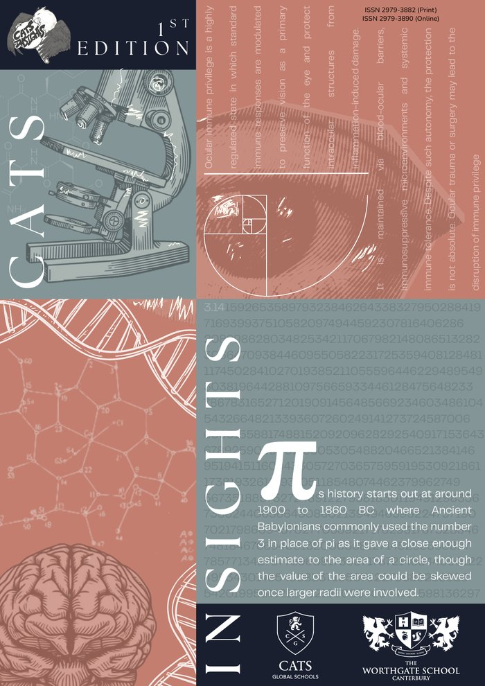

Edition 1 — September 2026
Sixteen articles by eleven writers, in five sections: Mathematics, Technology and Engineering; Medicine and Natural Sciences; CATS Perspectives; Case Studies; and Featured Essays.
Published by The Worthgate School, Canterbury, United Kingdom. Part of CATS Global Schools.
ISSN 2979-3882 (Print)
ISSN 2979-3890 (Online)
Download the PDF (25 MB)
Contents
Page numbers refer to the PDF edition.
Mathematics, Technology and Engineering
- 3.14159 and So On: How Pi Is Calculated Over the YearsAung Khant Pyaet · pp. 1–5
- Superconductivity: Materials and Underlying MechanismsOleksandr Boyko · pp. 6–9
- Regulations of Invisible Traffic JamsAbdulaziz Maksumov · pp. 10–13
- A Review of Hybrid Renewable Energy Systems: Modelling and IntegrationGabriel Ruli · pp. 14–23
Medicine and Natural Sciences
- Ocular Immune Privilege: Mechanisms and Pathophysiological ConsequencesAnna Sazonova · pp. 24–29
- Antibiotic Resistance: A Global Health Crisis in Slow MotionElif Sude Duru · pp. 30–34
- Six Scientists, Seven Drugs: The Pfizer Sandwich StoryKyal Sin Ye Yint · pp. 35–42
- Written in White: The Chemistry of Dover’s White CliffsKyal Sin Ye Yint · pp. 43–48
- Brewed in the Garden: The Chemistry of Kentish HopsKyal Sin Ye Yint · pp. 49–54
CATS Perspectives
- Empathy: The Impact of Genetic Factors in Contrast with Parenting by Either SexMinh Ngoc Nguyen · pp. 55–57
- What You Expect Is What You Get: How Expectation Shapes the SensesPhilip Chapanduka · pp. 58–59
- What Are Ideas?Luca Candelot · pp. 60–62
Case Studies
- Failure Case Study: Podilskyi BridgeHryhorii Suprun · pp. 63–66
- Failure Case Study: Lybidska–Demiivska TunnelHryhorii Suprun · pp. 67–68
Featured Essays
- Mental Health Diagnosis: Effects of the Internet on Modern Diagnostic PracticeMinh Ngoc Nguyen · pp. 69–71
- The Fifty-Seven Pence Problem: Non-Substitutability, Irreversibility, and the Case for a Tripartite Environmental Discount RateKyal Sin Ye Yint · pp. 72–77Very High Commendation, John Locke Institute Global Essay Prize 2026